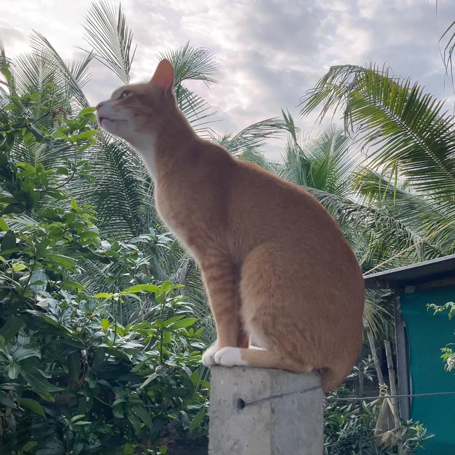
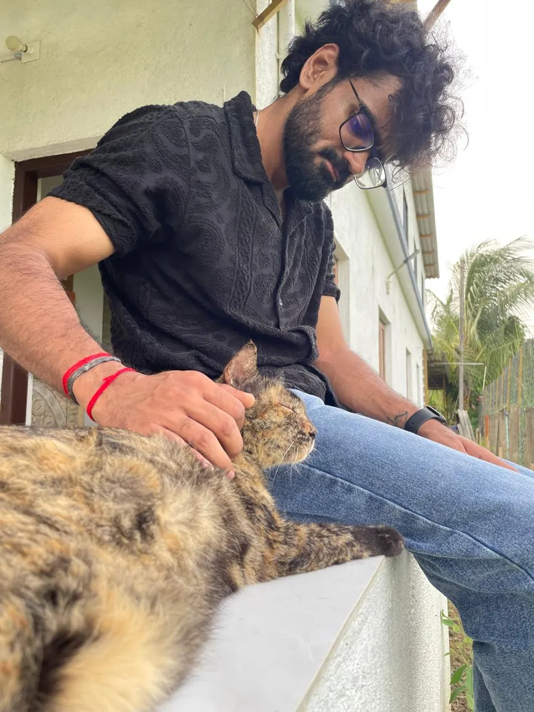
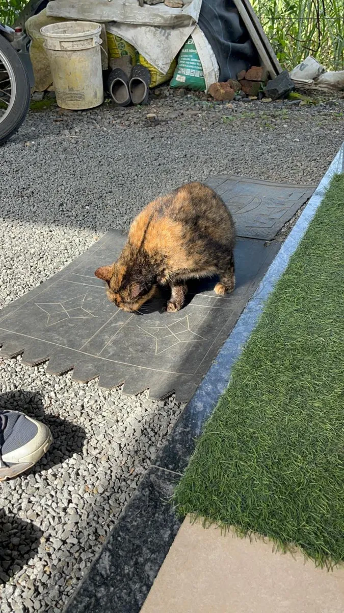

Designing products people love to use.
ScrollI'm Arpan, a product-focused UX/UI designer creating enterprise software used by thousands of people. Research, design and front-end, carried by one person from first workshop to shipped Angular — most recently for healthcare platforms used by 2,000+ people across 20+ countries.
Explore my workFeatured Projects
ResumeEnterprise, startup and independent work. Open a folder to see how each project came together.

tasteX
Pareexa.ai
GolfPac Travel
AI Workflow
About
I simplify complexity rather than decorate it. My work turns tangled enterprise workflows into intuitive products, through research, systems thinking and close collaboration with engineering.
Download resume“Whether I'm building lease and loan workflows from scratch for GE Healthcare or streamlining booking flows for GolfPac, the goal is the same: reduce cognitive load while keeping every bit of business capability. With hands-on Angular experience, I close the gap between design intent and what actually ships.”
5+ yearsDesigning and building products
2,000+Users on the platforms I design
20+Countries using that work
“I thrive where user needs, business goals and engineering constraints meet. My strength is simplifying complex enterprise systems into experiences that teams can confidently build, scale and adopt. I'm open to relocating and to working with teams worldwide.”
5,000+Quotes generated through my GE flows
7TCS awards for delivery and innovation
90 daysNotice period
TCS
Pareexa.ai
tasteX
Inospire
I bring together research, design and engineering to build systems that flex as your product grows.
See my AI workflowResearch
Stakeholder workshops, journey mapping and usability testing that ground decisions in evidence, not assumptions. It's where a project starts: finding where the work has moved on and the product hasn't yet.
UX & Flows
Information architecture, flows and wireframes that turn tangled processes — approval chains, quote generation, booking — into one guided path people can follow without a manual.
Design Systems
Reusable component libraries and visual systems that keep multi-module products consistent. Built once, used across every portal, so new features ship faster and look like they belong.
Front-end
Hands-on Angular, AngularJS and PrimeNG. I build what I design, partner closely with developers, and have cut front-end load by around 20% through component-level optimisation.
AI Workflow
Claude, Cursor, Figma Make, Codex and Copilot woven into research synthesis, prototyping and delivery — moving faster from ambiguous brief to tested product without cutting corners.
Six years across enterprise, startups and independent work.
Full resume-
Oct 2022 — Now
UX/UI Designer
Tata Consultancy Services · Client: GE Healthcare
Enterprise healthcare workflows and dashboards, scaling the platform from ~50 to 2,000+ global users. Built a reusable design system across modules and contribute hands-on Angular.
-
Jan 2026 — May 2026
Product & UX Design
tasteX
QR guest ordering, a kitchen staff dashboard and a super-admin panel across a multi-hotel cloud kitchen, on one shared design system. In UAT ahead of rollout.
-
Sep 2025 — Mar 2026
Product Design Advisor
Pareexa.ai
Advised founders on product strategy and UX direction for the student learning journey, and established a scalable component library for iOS, Android and web.
-
Aug 2024 — Sep 2025
Product Designer & Front-end Developer
GolfPac Travel
Redesigned core booking and trip-planning flows, improving destination discovery and quote requests, and restructured AngularJS controllers in a front-end modernisation.
-
Mar 2021 — Oct 2022
Front-end & UI Developer
Tata Consultancy Services · Client: GE Corporate
Improved front-end performance by ~20% through component-level optimisation, and partnered with stakeholders on redesigns and solution architecture.
-
Oct 2020 — Mar 2021
Graphic Designer
Inospire Consultancy Services
Style guides and brand directions, plus UI design, illustration and micro-animation for client projects.
Certifications, awards and the things I'm proud of.
Verify on CredlyClaude Certified Architect — Foundations
TCS AI Spark Award

TCS AI Idea Igniter Award
Best Team Award
On the Spot Award
Xcelerate Warrior Award
Xcelerate Conqueror Award
Xcelerate Victor Award
Off the clock
Proud godfather to Jeeru and Masala.
I don’t have a pet of my own, but my friend’s two cats decided I’m family anyway. Jeeru is the ginger one, keeping watch from the garden wall; Masala is the tortoiseshell who looks unimpressed by everything except a good head scratch.


